Taking the road less traveled by TD riders
Alternative routes
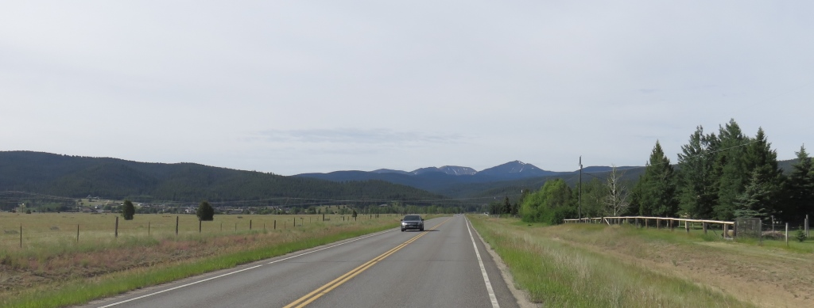
captionThe road out of Butte was paved for the first 10 miles. Once I was off the main state highway the road turned up for the next 8 miles.
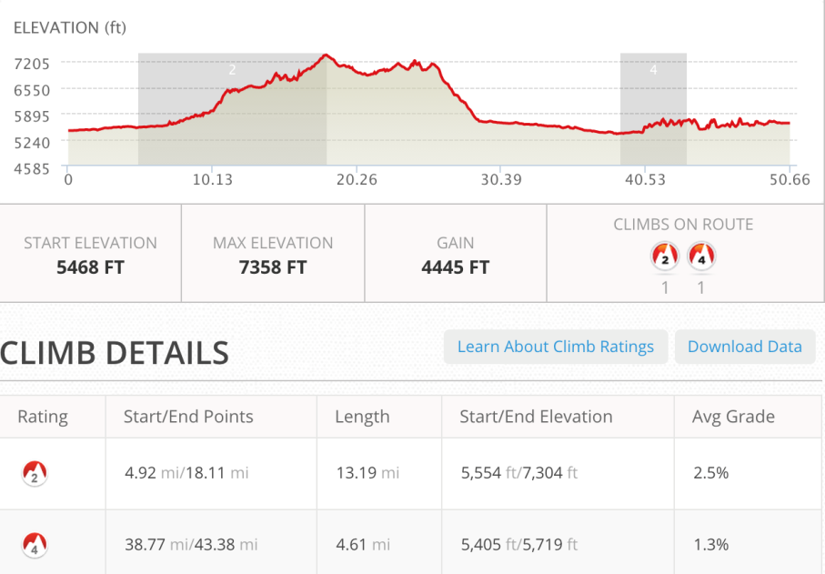
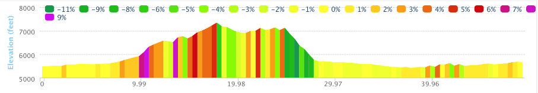
The giant mine in the hills behind Butte. I didn't notice them until I got to this vantage point since I had
approached the city from the north and traveled around the mines and slag pits.
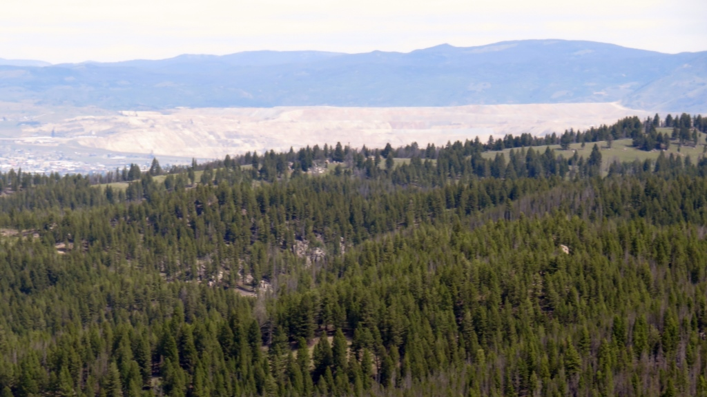
This pass took you out of the Butte water shed and over the continental divide.

Another Divide Crossing
The top of this pass went on for a while. There was a campground on the top and before the trail dropped off I stopped for lunch and a break.
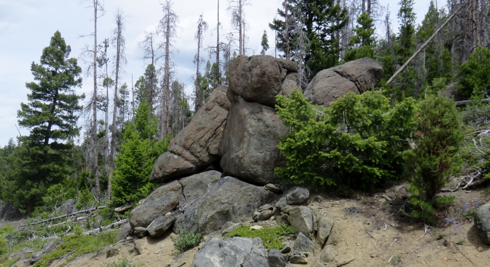
The trail then started down and became a white knuckle adventure all the way down to the interstate highway. Some very steep downhills with just enough curves to make your hands numb while you tried to hold onto your brakes. I heard later in the day I rider had fallen and broken their collar bone.
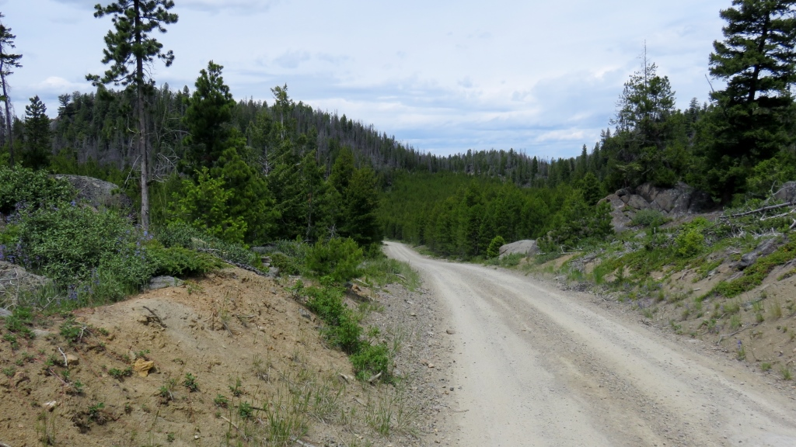
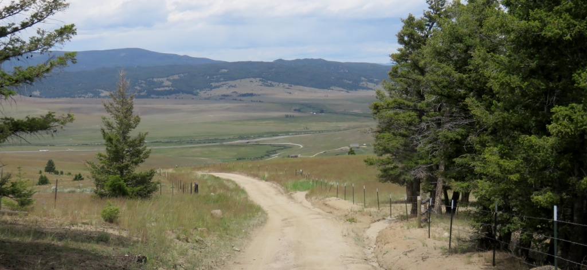
Taking the easy way to "Jim's Tour Divide"
This was where I took my first "alternate". Up until this point I had followed the TD race path 100% over some pretty rough terrain. Coming up on the race map was a place called Fleecer Ridge which supposedly had a 18% downhill grade. On the ACA maps there was an alternate route along two state highways. These looked pretty easy so I decided to take this eighteen mile alternate instead of about 23 over the mountain.
Great Divide Outfitters After following the I15 frontage road for 10 miles (I would take this road again during the end of my ride into Lima). When I turned onto Rt 47 I hadn't stopped for most the day. So mostly to get off the bike I stopped at Great Divide Outfitters
Stopped in the fly shop. Had a nice time talking with John and another local about the area. I was looking for something to drink and John brought out his own milk and Hersey's chocolate syrup so I could make some chocolate milk which fueled me into the wind on the ride up to Wise River.
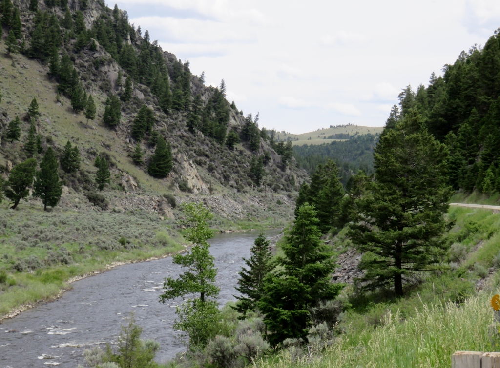
Mostly into the wind and trying to beat the rain coming with the wind. There were some of the first clouds I had seen in Montana. I was happy when my garmin rejoined the official trail which meant I only had two miles to the Wise River Club.
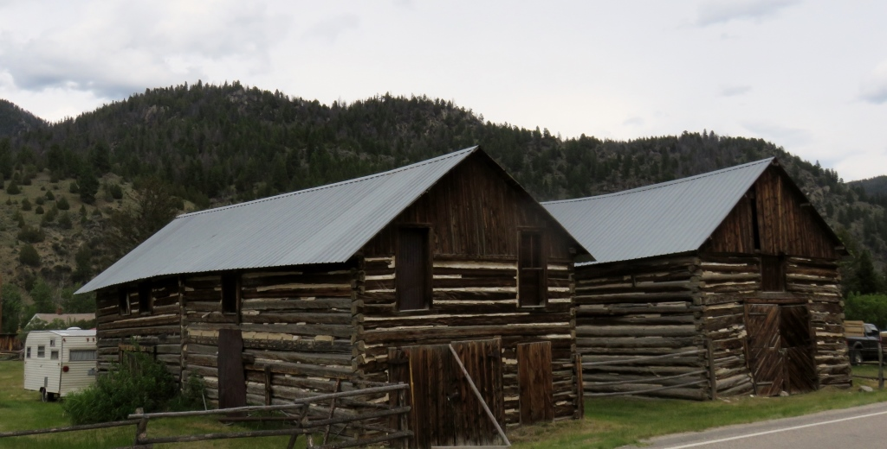
Passed these old buildings and the river meandered up with many fisherman and fishing camps along the way.
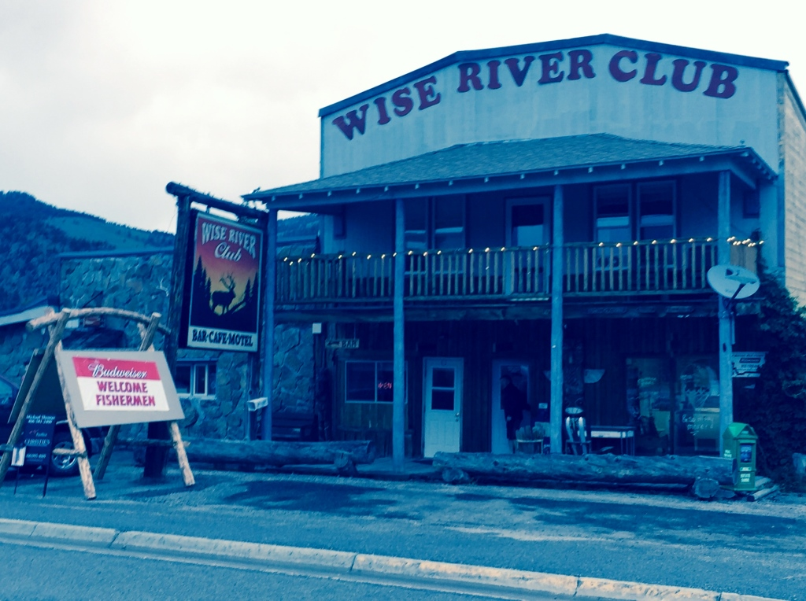
Wise River Club
I got a room for the night and had dinner with Mike from Washington whom I had last seen in Ovando. His tour was done after hurting his knee on the ride / walk down from Fleecer Ridge. He was getting a ride from the hotel manager the next day back to Butte so his wife could pick him up.
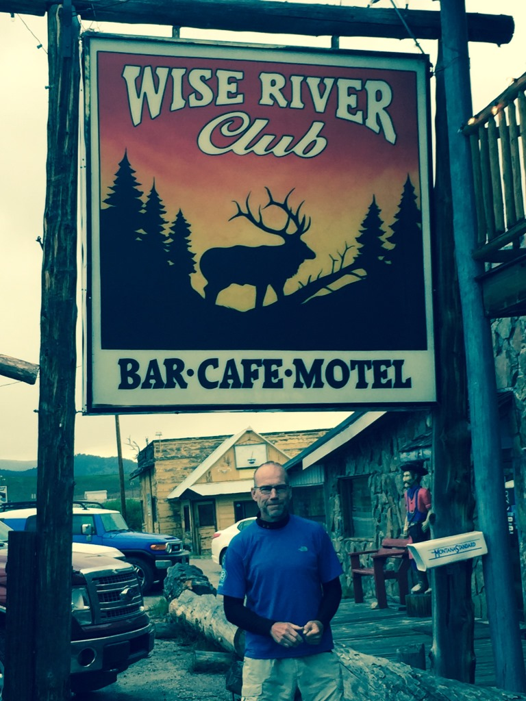
Wise River ClubNew Objective - Ride from Banff Alberta to across the Mexico border
I guess this was the goal all along. When I finally realized this it took a load off my mind. I had decided
I didn't need to stick rigidly to the Race Map. I would be leaving the safety of the purple line. I had to
find some
routes and take some chances without having all the details my maps and devises gave me.
Even the ACA maps don't give you much help off the path since the cue sheets cover much of the maps.
It allowed me to have more fun and make some time instead of slogging along through potentially really
muddy or steep sections. It also allowed me to slow down and not worry so much about where I was going to
get to the next day. In the days ahead I would venture off the main trail and see some really great sections
of the areas around the TD course. Generally I made it back to the route by the end of the day where I met
other riders.
After 13 days on the road and seeing numerous people quit the race I decided to follow a path of lesser
resistance while still trying to stay on the course as much as I could.
June 21 - 51 miles - Butte to Wise River, MT
See full screen map To go places and do things that I've never done before – that’s what living is all about.Text by Jim O'Brien . Photographs by Jim O'BrienTD on Flickr.